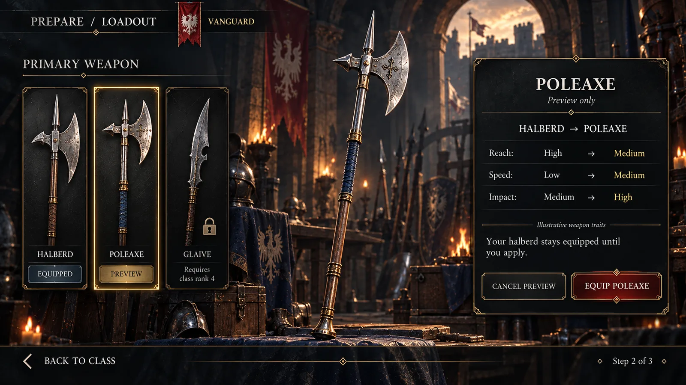

Enter
180 mscubic-bezier(0.2, 0.7, 0.2, 1)Panels, toasts, tooltips
UI/UX design & development · games, apps, sites, courses
I design interfaces and build them, from the first wireframe to the code in the repository. UX, UI art, motion and the engineering behind it, for games, apps, websites and training products.
Showreel · real footage from my games, tools and motion work
Switch screens, change the skin, use a keyboard or plug in a gamepad. This one is a game HUD; apps and sites get the same care.
180 mscubic-bezier(0.2, 0.7, 0.2, 1)Panels, toasts, tooltips
120 mscubic-bezier(0.4, 0, 1, 1)Anything leaving the screen
320 mscubic-bezier(0.34, 1.56, 0.64, 1)Rewards, equip, level up
600 ms · 450 ms holdcubic-bezier(0.2, 0.7, 0.2, 1)Health lost, shown late on purpose
Live interface · rendered by your browser, not a video · mouse input
What I build
Games are where I learned the craft. I design and build apps, sites and courses the same way.
HUD, menus and systems UI, designed and implemented in engine, with controller, keyboard and touch support.
Web and desktop products with dense, task-heavy interfaces: editors, dashboards, writing and file tools.
Marketing and product sites, designed and built as components, with performance and accessibility checked. This page is one of them.
Learning products where the interaction does the teaching: training games, simulations and guided practice with a debrief.
By the numbers Each figure says where it comes from
Studios I have worked inside, and the names my work has shipped for
Studios: Piranha Games, Offworld, Phoenix Labs, Sprung Studios, AppLovin, Frima Studio, Hothead Games, DeNA, UX Magicians, Gogii Games, Cupcake Digital, Disney · Club Penguin. Clients and properties: Riot Games, Sony, Tencent, Disney, Universal Studios, Hasbro, Twitch, DreamWorks, Nickelodeon, BBC Kids, Glu Mobile, Big Fish Games.
My career credits from studio roles and agency client work, as listed on my résumé. Names belong to their owners and do not imply endorsement.
The short version · 50 seconds
Twenty years of game UI in under a minute: shipped studio work, my own game and tools, what I do, and what the people who managed the work say about it.
About me
I own the interface from the first flow to the last widget: UX, UI art, motion and the implementation in engine or in code. Twenty years across PC, console, mobile, VR and the web, as an individual contributor, a lead and a director.
Also the founder of Strategic Sloth LLC, where my own tools, plugins and game are made.
01 / What I do
Take the whole pipeline or the part you are missing. Each piece is built to hand over cleanly to the next.
Decide what people need before deciding how it looks.
Flow maps, wireframes and clickable prototypes for the journeys that carry your product: first session, core loop or core task, navigation, checkout and progression.
A visual language that holds up at screen two hundred.
Look development on representative screens, then a component library with every state drawn, named and ready to slice.
The part people feel before they read anything.
Transitions, state feedback, stingers and micro-interactions, specified as timing and easing tokens so the build matches the prototype.
Built in your engine or codebase, in your repository, to your budget.
Components, layouts, bindings and navigation built directly in the project, so there is no gap between the approved design and the shipped screen.
Co-development
Embedded for a sprint or for a whole production. The work lands where your team already works.
Git or Perforce, your branching model, your review process. UI arrives as commits and pull requests.
Planned with your producers, shown in your reviews, sized to your milestones.
Design and implementation answer to the same person, so nothing is lost between them.
Documented components, source files and a walkthrough, so your team owns it afterwards.
02 / Implementation
The same component in every runtime: a health bar whose ghost segment waits 450 ms, then drains over 600 ms. It is the bar running in the demo at the top of this page.
// Layout and styling stay in the Widget Blueprint; behaviour lives in C++.
UCLASS()
class UHealthBarWidget : public UUserWidget
{
GENERATED_BODY()
public:
UFUNCTION(BlueprintCallable) void SetHealth(float NewPct);
protected:
virtual void NativeTick(const FGeometry& Geo, float Dt) override;
UPROPERTY(meta=(BindWidget)) TObjectPtr<UProgressBar> Fill;
UPROPERTY(meta=(BindWidget)) TObjectPtr<UProgressBar> Ghost;
UPROPERTY(Transient, meta=(BindWidgetAnim)) TObjectPtr<UWidgetAnimation> HitFlash;
UPROPERTY(EditAnywhere) float GhostDelay = 0.45f;
UPROPERTY(EditAnywhere) float GhostSpeed = 1.f / 0.6f;
private:
float Target = 1.f, Hold = 0.f;
};
void UHealthBarWidget::SetHealth(float NewPct)
{
NewPct = FMath::Clamp(NewPct, 0.f, 1.f);
if (NewPct < Target) { Hold = GhostDelay; PlayAnimation(HitFlash); }
Target = NewPct;
Fill->SetPercent(Target);
}
void UHealthBarWidget::NativeTick(const FGeometry& Geo, float Dt)
{
Super::NativeTick(Geo, Dt);
if ((Hold -= Dt) > 0.f) return;
Ghost->SetPercent(FMath::FInterpConstantTo(Ghost->GetPercent(), Target, Dt, GhostSpeed));
}Widget architecture, CommonUI input routing, focus navigation and UI materials, built in C++ where it matters and left in Blueprint where designers need to iterate.
How I work in Unreal Engine// Layout in UXML, look in USS. The ghost trails through a USS transition:
// .health-bar__ghost--trailing { transition: width 0.6s ease-out 0.45s; }
[UxmlElement]
public partial class HealthBar : VisualElement
{
readonly VisualElement fill = new() { name = "fill" };
readonly VisualElement ghost = new() { name = "ghost" };
float target = 1f;
public HealthBar()
{
AddToClassList("health-bar");
Add(ghost);
Add(fill);
}
public void SetHealth(float pct)
{
pct = Mathf.Clamp01(pct);
bool damage = pct < target;
target = pct;
fill.style.width = Length.Percent(target * 100f);
ghost.EnableInClassList("health-bar__ghost--trailing", damage);
ghost.style.width = Length.Percent(target * 100f);
if (!damage) return;
AddToClassList("is-hit");
schedule.Execute(() => RemoveFromClassList("is-hit")).StartingIn(120);
}
}Runtime UI in UI Toolkit with UXML and USS, or uGUI with prefabs and canvases where the project already lives there. Structured so a team can extend it without me.
How I work in Unity# Fill and Ghost are TextureProgressBars styled by the project Theme.
extends Control
const GHOST_DELAY := 0.45
const GHOST_TIME := 0.6
@onready var fill: TextureProgressBar = %Fill
@onready var ghost: TextureProgressBar = %Ghost
var _tween: Tween
func set_health(pct: float) -> void:
pct = clampf(pct, 0.0, 1.0)
var damage := pct < fill.value
fill.value = pct
if _tween:
_tween.kill()
_tween = create_tween()
if damage:
_flash()
_tween.tween_interval(GHOST_DELAY)
_tween.tween_property(ghost, "value", pct, GHOST_TIME) \
.set_trans(Tween.TRANS_CUBIC).set_ease(Tween.EASE_OUT)
func _flash() -> void:
modulate = Color(1.8, 1.8, 1.8)
create_tween().tween_property(self, "modulate", Color.WHITE, 0.12)Scenes built from containers that resize properly, one Theme resource that carries the visual language, and motion written as tweens you can read.
How I work in Godot// Attached to a Group element under a Screen; fill and ghost are Image elements.
import { Script, math } from 'playcanvas';
export class HealthBar extends Script {
static scriptName = 'healthBar';
/** @attribute @type {import('playcanvas').Entity} */ fill;
/** @attribute @type {import('playcanvas').Entity} */ ghost;
/** @attribute */ ghostDelay = 0.45;
/** @attribute */ ghostTime = 0.6;
target = 1; shown = 1; hold = 0;
setHealth(pct) {
pct = math.clamp(pct, 0, 1);
if (pct < this.target) this.hold = this.ghostDelay;
this.target = pct;
this.fill.element.anchor = [0, 0, pct, 1];
}
update(dt) {
if ((this.hold -= dt) > 0) return;
const step = dt / this.ghostTime;
this.shown += math.clamp(this.target - this.shown, -step, step);
this.ghost.element.anchor = [0, 0, this.shown, 1];
}
}Interfaces for PlayCanvas projects, in the engine’s own element system or as an HTML layer over the canvas, sized for a link that has to load fast on a phone.
How I work in PlayCanvas// The compositor does the motion. CSS that goes with it:
// .fill, .ghost { transform-origin: left; transform: scaleX(var(--hp)); }
// .is-damage .ghost { transition: transform .6s cubic-bezier(.2,.7,.2,1) .45s; }
export function setHealth(bar: HTMLElement, pct: number): void {
pct = Math.min(1, Math.max(0, pct));
const previous = Number(bar.style.getPropertyValue('--hp') || 1);
const damage = pct < previous;
bar.classList.toggle('is-damage', damage);
bar.style.setProperty('--hp', String(pct));
if (damage) {
bar.animate({ filter: ['brightness(1.8)', 'none'] }, { duration: 120 });
}
}Browser games and custom engines, where the interface is often half the product. Designed and built end to end, from the first wireframe to the deployed build.
How I work in Web & custom engines03 / Real builds
Every tile is labelled with what it is: recorded gameplay, an app recording, an editor capture, or a product screenshot. No mock-ups dressed as shipped products.
Custom three.js engine · WebGL
An online medieval dynasty RPG running in a browser-based engine I wrote. World, rendering and interface are my own work.
See the gameWeb · TypeScript · 3D globe
A mission hub with a live globe, guided tutorial, progression and debrief screens. Designed and implemented.
Open the case studyWeb app · infinite-canvas writing tool
A writing workspace with a canvas for relationships, an outline for order and detail views for characters.
Read the case studyWeb application · 2D plan and 3D walkthrough
Plan editing, furnished room views and a walkthrough of the same property, kept in one application.
Read the case studyWeb game · React · TypeScript
Isometric strategy with a readable board, evidence panels and a rules editor.
Play and inspectWeb game · React · TypeScript
A dense investigation console made scannable: evidence, timeline and a decision to defend.
See the set of eightWeb game · React · TypeScript
A dispatcher desk: prioritise, assign, and see what each call cost.
See the set of eight Editor capture · plugin available on Fab
Editor capture · plugin available on Fab Unreal Engine 5 · UMG · C++ plugin
My controller-navigation plugin for UMG. Focus memory, navigation rails and a Focus Doctor that finds broken navigation before a player does.
View on FabWeb · WebGL authoring tool
Paint a grid, watch the 3D world regenerate beside it. Tool UX for game teams.
Read the case study Product screenshot · available now
Product screenshot · available now Web app · game UI production tool
My own tool for turning a reference into an editable interface, with component states and a UI kit export.
Try SliceForgeWeb game · React · TypeScript
Arcade flight with a HUD that has to be read at speed.
See the set of eightWeb game · React · TypeScript
An access graph you solve by reading it: nodes, paths and the one edge that matters.
See the set of eightWeb game · React · TypeScript
A SQL investigation where the query editor, results and case notes share one screen.
See the set of eightWeb game · React · TypeScript
An alert board under time pressure: sort, prioritise, and justify the order.
See the set of eightWeb game · React · TypeScript
A timed inbox with an inspector for sender, link and tone evidence.
See the set of eightThese are my own games, apps, tools and plugins, and training simulations I designed and built. Studio credits and concept work follow.
Featured case study
Vanguard: a design critique, four-step flow, three screens and a React prototype you can play, with the test plan I would run before implementation.

Shipped work
This did not start last year. The record below runs from today back to 2006: PC, console, mobile, VR, kids’ apps and the web. Open any title to see the screens.
SliceForge and Focusrail are live. Storefront Builder for Unreal Engine is coming to Fab, and Norman Ascension is in development for Steam.
Senior UX designer for three years, from player flows to Unreal Engine implementation.
UX Director on the central gaming team: individual contributor, advisor and director across the company’s studios worldwide. The work belongs to those studios, so there are no screens here.
Senior UX product designer on client projects across Unreal and Unity pipelines.
Lead UX/UI designer on connected-toy, virtual reality and augmented reality projects for licensed properties including Pokémon and Star Wars.
UX/UI and VR art director: daily client meetings, deliverable documentation and mentoring junior designers, on projects including Plants vs. Zombies.
UX/UI designer on Dauntless. Built the quest system UX and a UX workflow the studio kept using.
Front end for MechWarrior 5: Mercenaries, the UX style guide, and implementation with UI engineers.
Senior UX/UI designer: wireframes, assets, animation and Unity implementation.
One base structure for three games: Super Battle Tactics, TRANSFORMERS: Battle Tactics and Military Masters.
Key art and UI from titles I worked on, oldest at the bottom. Some of it is 17 years old and looks it; it is here because every one of these shipped a lesson that still applies. Artwork and trademarks belong to their respective owners.
Full history on the résumé ↗ · All 57 pieces on ArtStation ↗
04 / Selected work
Studio work, client concepts and design studies from twenty years of game UI. Each project says where it comes from, and every card holds its own set of screens.
Piranha Games · UX / UI · 2016–2018
A connected set of interfaces for choosing a destination, evaluating a contract, and preparing a mech for the next mission.
Design concepts · 2022–2025
A military customisation concept built around faction identity, equipment previews and ownership states, with a confirm step before anything is applied.
Gogii Games · Game UI · 2009–2013
Collection, deck-building and card-detail interfaces that bring artwork, comparison and composition into the same visual language.
Concept revisited · AI-assisted visual exploration · 2026
An atmospheric class-selection concept rebuilt as a full preparation journey: understand the role, compare the loadout, deploy with confidence.
Independent AI-assisted concepts · 2026 · fictional clubs, not commissioned
Two sports, four screens. Cinematic presentation with the decisions of team preparation kept clear, from a hockey line swap to a lineup one player short.
Independent product concepts · 2026 · fictional products and sample data
The same thinking outside games: a wallet that makes the commitment clear before purchase, and a security course that shows the reasoning behind each answer.
UX Magicians · Senior UX Product Designer · 2020–2021
A front end that follows the PC flow, taken from grey-box wireframes to a coloured pass: agent select, party lobby, queue, mode choice, match found, missions, friends, store and collection.
Phoenix Labs · UX/UI Designer · 2018 · Unreal Engine
Crafting at the armoursmith, hunt matchmaking, the season journal and item comparison cards for the co-op action RPG, plus the quest system UX a teammate says the studio was still using years later.
Design study · collectible hero game
A client for a collectible hero game: home, hero selection, lore profile, roster, a deck curve chart, card frames and the victory and defeat banners.
Card game UI · title, deck builder and board
A science-fiction card game from title screen to table: deck list, deck builder, card detail and a full two-player board.
Concept work · systems UI
A spell-building interface where time magic is assembled along a track, with a character inventory and rune controls in the same dark-fantasy language.
Mobile studies and client concepts · 2019–2021
Portrait-first game UI: main menus, card reveals, combat reports and pause screens tested in several styles, plus a web launch page and a Pokémon VR concept from Frima.
UX Magicians · Senior UX Product Designer · 2020–2021
Second-screen basketball from the Phoenix Suns and Verizon 5G project: a live court overlay with player ratings, schedule and news, sign-in, and a collectible player-card concept with the wallet kept in view so players spend deliberately.
UX Magicians · Mobile product UX · 2020–2021
A mobile experience connecting discovery, play, creative expression and sharing. The UX maps and component work show how the screens fit together.
Game titles and marks belong to their owners. See the full portfolio, with a UX walkthrough for each project ↗
05 / Component library
These are not screenshots of a kit. Each tile opens the real component from SliceForge React UI, my own library, running in your browser with its states, motion and keyboard support.
Built in React and TypeScript, with no UI framework underneath. From the component library in SliceForge ↗
06 / Motion
Short motion concepts: how a screen arrives, how data fills in, how a reward lands. Personal explorations, playing as recorded.
07 / Figma & process
Working files, not presentation slides: flows, sitemaps, component sheets and the options that were tested before one was chosen.
Inside the Figma files
44 close-ups exported page by page from 7 sets of working files: flow maps, wireframes, UI kits, specs and final screens. Click any image to open it full screen, then click again to zoom to full resolution and drag around.
Mobile shooter front end
Lobby, loadout and backpack for a mobile shooter: from flow map and grey-box wireframes to a specified UI kit with art applied.
Backpack system, specifiedLoadout in PVP and PVE and the attribute popup, each with the notes engineers build from.
AI game-creation platform
Product design for a platform that generates playable games: research, structure, marketing site and the first-run flow.
First-run welcomeThe rendered opening screen of the creation flow.
Mobile word game
A live crossword game’s new features: power-ups, shop, banners, popups and a settings reskin, with the client’s notes answered on the canvas.
Lobby bannersReward-centred and social-centred banners, shown for guests and signed-in players.
Mobile card battler
Four prototype versions of a card battler’s meta game: home, collection, hero details, events and leaderboard, then a visual pass.
Visual passLeaderboard, home and hero card screens with final art direction.
Responsive store and style guide
A web shop skinned for a bingo game: style guide derived from the game’s art, then login, home and shop at five breakpoints.
LoginThe sign-in screen in the game’s own art.
Mobile MOBA style exploration
Three complete UI styles for the same lobby, plus HUD and screen studies. All art assets made by me.
Lobby, style 1Rounded and bright.
Live mobile games, mapped
Whole games laid out screen by screen and wired together: the work that comes before any redesign.
Crystal Blast: flow mapLaunch, tutorial, core loop, shop and results, with every branch drawn.
More from the Figma archive
Straight from my Figma drafts: whole-canvas views of real files, not tidied for a portfolio. Flow maps, UX teardowns of live games, style tests and screen sets, 2021 to 2025.
Canvas overviews at the size Figma stores them, so the detail is in the structure, not the pixels. Game names belong to their owners.
08 / In the editor
Screen recordings and captures from Unreal Engine and from SliceForge, my own game UI editor. This is the part most portfolios leave out.
09 / Visual range
Ten complete UI directions designed in 2026, from tactical shooter to cosy farm. Concept studies from my UI collections, not footage of released games.
Twenty screens from ten complete UI collections, each a full set of menus, HUD, inventory and settings. Browse the collections →
10 / Process
Each step ends with something you can review. Skip the ones you have already done.
I use the build, read the docs and map where people hesitate. You get a written scope before any design starts.
→ Scope, flow map, risk listStructure first. Every screen and state in grey boxes, tested as a clickable prototype.
→ Wireframes, prototypeVisual direction on three or four representative screens, then the component library.
→ Style frames, component libraryTiming and easing defined as tokens and proven in a motion prototype.
→ Motion spec, prototypesBuilt in your engine or codebase, in your repository, reviewed through pull requests like any other code.
→ Components, navigation, bindingsProfiling, edge cases, localisation and input passes, then documentation your team can extend.
→ Perf report, docs, sourceUX audit · sample
An audit is the fastest way to start. This is the shape of one: my review of Clash Royale’s interface, written as a teaching example of what a strong mobile UI gets right and where it will strain.
Every secondary button sits at the edge of the screen, which leaves the action button front and centre and shows the player where to go next.
The main icons stay along the bottom on every screen. Nothing jumps around, and a new screen scrolls once by itself to show that it can.
Header, player info, chests, secondary buttons and the action button each read at their own level.
Close and Back keep the positions players already know.
Buttons are distinct by shape, size and style for each level of the hierarchy.
Feedback on everything: animation, gleams and response to touch.
Simple, clear and quick. It never feels like work.
The navigation is limited to five features. Adding a sixth will force a structural decision.
Usually a mistake. Here it is one level deep, a confirmation, and always returns to the previous screen, so it holds.
The level droplet uses the same colour as epic cards, which muddies what that colour means.
What you receive
Mobile strategy game · UX review
Behaviour Interactive · UX solution
Clash Royale is a trademark of Supercell. The review is independent commentary and was not commissioned.
Talks & teaching
The line my UX talk is built around. I have taught game interface design at Vancouver Film School and written this talk for the studios I have worked with.
10 principles of UX
The talk
Flow is the big picture; screens are the small detail. Design the player’s path first and the screens stop surprising you with features nobody planned for.
Versions written for Hothead Games, Frima Studio, Bandai Namco, Behaviour Interactive and AppLovin.
Teaching
Instructor at Vancouver Film School in 2016: wireframes, user flows, prototyping and usability for students entering game UI.
For your team
The same material runs as a half-day session with your designers and engineers, using your own game as the example.
Ask about a workshop →In their words
Eleven of the recommendations on my LinkedIn, from art directors, producers, engineers and a client, 2015 to 2022.
“UI, UX, illustration and implementation Remi was a one stop shop to get stuff done. Strong recommend, would hire again.”
“Remi created an entire UX workflow and pipeline neither of which previously existed in any form at the studio. … not only up to the task of making the game more playable, but to also create entire workflows, that are still in use today.”
“Remi had a huge influence on Boom Boom Football. He applied his formidable understanding of UX to make some excellent changes to the game’s flow and followed that up with solid artistic implementation. When we lost a key screen building artist, Remi proactively learned new areas of Unity to fill that gap.”
“It was an absolute pleasure to work with Rémi on Super Battle Tactics and his efforts brought in massive improvements to the User Experience. … He regularly shared his knowledge with the rest of the team to educate everyone in thinking about User Experiences earlier in the design pipelines.”
“Remi has a fantastic understanding of UX/UI needs in gaming. Working with him on my project was not only exactly what we needed, but was informative and a great learning opportunity for my team.”
“One of the best UI/UX expert I have ever work with. … His talent on UI/UX and solid painting skill helped the team went through tough time and delivered great result!”
“His understanding on UI/UX makes the UI/UX development process quite faster and much more efficient. He’s also a good team-worker, who works very closely with engineers and game designers.”
“He organized several informative UI/UX workshops while at the company and provided valuable feedback to our team that improved our game at every milestone.”
“Remi has a great understanding and experience with game UI/UX. … If there is a need for fresh UI/UX design, Remi is that guy!”
“Rémi is a talented UI/UX artist and director. … He’s always eager to help and share his knowledge. I would be thrilled to work with him again.”
“A real knack for taking feedback from way too many sources at once, and coming up with something awesome that leaves everyone feeling listened-to and involved.”
11 / Ways to start
Durations are typical, not fixed. Every engagement begins with a written scope and a price.
A hands-on review of your current build or designs: hierarchy, navigation, feedback, readability, input and accessibility.
Pick the flow that matters most. It is designed, animated and implemented in your project so the team can judge the real thing.
Ongoing design and implementation alongside your team, from pre-production through launch and live updates.
12 / Questions
No. Games are the deepest part of the portfolio, and I design and build web and desktop apps, websites and training products the same way. The work on this page includes a writing tool, a property application and a set of training games.
Both, and they work best together. I can also take either half: implement another designer’s work, or hand a specified design system to your engineers.
Unreal Engine, Unity, Godot, PlayCanvas, and the web: React and TypeScript apps, sites and custom engines. The design system and motion spec stay the same; the implementation follows each engine’s own UI framework.
Yes. Git or Perforce, your branching model, your review process. UI work arrives as commits and pull requests, not as a zip file.
I do: Guillaume “Remi” Couture. Everyone calls me Remi. I lead the project and do the UI work directly.
Your engine or stack and target platforms, the stage the product is at, the screens or flows in question, and your timing. A build or a few screenshots help.
No. They are my own credits from two decades of studio roles and agency work, shown with the studio and role for each. Strategic Sloth is the company I founded for my own tools, plugins and game.
Let’s build something good
Send a screenshot, a recording or a build, with your engine or stack and your dates. You will get a straight answer on fit and scope.